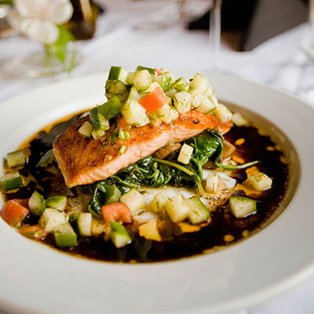
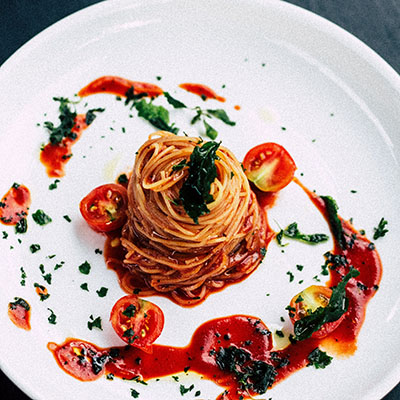
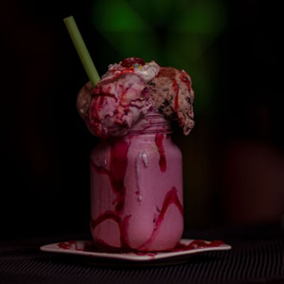

Çadır Restaurant
Anasayfa
Hakkımızda
Galeri
Menü
İletişim
Rezervasyon
Başlangıçlar
Özel soslu cevizli makarna
Garnitürlü füme balık fileto
Deniz mahsüllü tereyağlı pirinç pilavı
Sarımsak ve tereyağı soslu taze pide ekmeği
Ana Yemekler
Adana Kebap
Yanında ızgara domates ve biber ile...

Izgara somon fileto
Çeşitli sebzeler ve özel sos ile...
Izgara tavuk
Özel buğday tortilla ekmeğinde yeşillikler ile birlikte...
Karışık Izgara
Izgara patlıcan, patates, biber ve soslar eşliğinde...

El yapımı domates soslu spagetti makarna
Domates ve garnitür ile birlikte...
Kızarmış levrek fileto
Patates kızartması ve özel sos eşliğinde...
Tatlılar
Çikolatalı Cupcake
Çilekli Kremalı Pasta
Vanilyalı Dondurma
Kremalı Kek
Alkollü İçecekler
Soğuk Bira Seçenekleri
Kırmızı, Beyaz ve Roze Şarap Seçenekleri
Dünyadan Viski Seçenekleri
Taze Meyvelerden Egzotik Kokteyller
Alkolsüz İçecekler
Taze Meyve Suyu Çeşitleri

Taze Süt ve Meyvelerden Milkshake Seçenekleri
Siyah, Yeşil ve Bitki Çayları
Taze Çekilmiş Kahve Çeşitleri